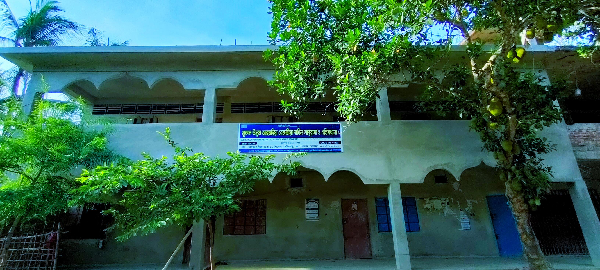

Nurul Ulum Ahmadia Rezvia Dakhil Madrasah

Situation:
The name of our Madrasah is Nurul Ulum Ahmadia Rezvia Dakhil
Madrasah.It stands on the Khiram of some roads connecting different parts
of the locality . So the students can attend the Madrasah without any
difficulty.
Description:
Our Madrasah is housed in a big building. There are fifteen
rooms in it. One room is meant for the Superintendent another for the
teacher’s room. There is a student’s common room where indoor games are
played. It has a big library too. Nearly five hundred students read in
this madrasah. The class rooms are spacious and have all the required
furniture. It has also a good play ground.
Teaching Staff :
There are twenty teachers in our madrasah. The
superintendent is an experienced and learned man. Other teachers are also
learned and experienced. They love us and teach us efficiently. We all
obey them.
Time- Table :
The madras works from 10-30 a.m. to 4.00 p.m. Classes are
held regularly. We get half an hour’s recess after the fourth period. We
than have our Tiffin.
Conclusion :
Our madrasah makes brilliant results every year. We are proud
of our teachers and of the Madrasah as a whole.
Visit Facebook